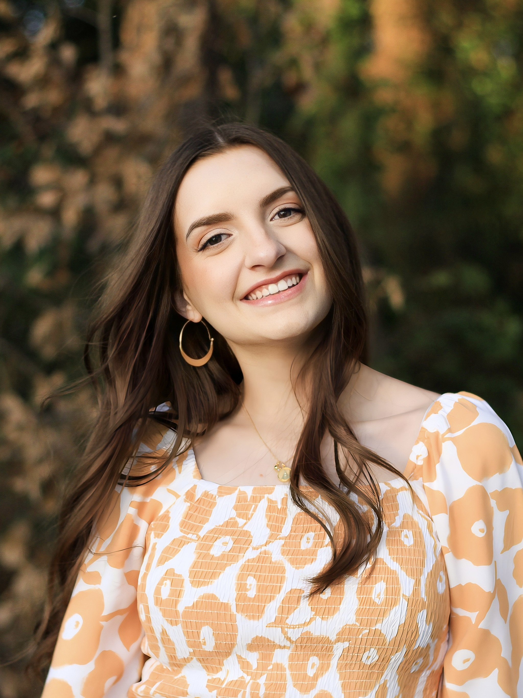

Hi friend! Allow me to introduce myself! My name is Isabelle (Izzie). I am a sophomore at Brigham Young University, majoring in Computer Science. When I arrived back home to Cypress for the summer, I dreamed of doing something that would combine my experience in computer programming, my enthusiasm for educating curious, young minds, and my love for all things STEM. Thus, Camp Coderpillar was…hatched. Here is a little bit about my background:
